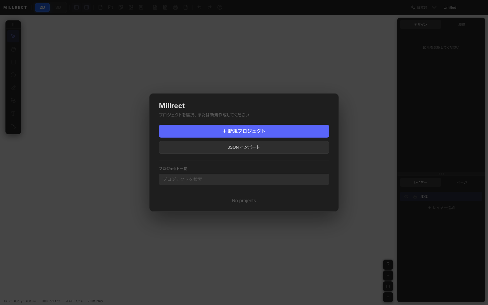
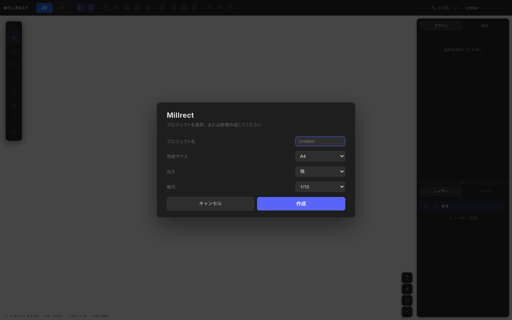
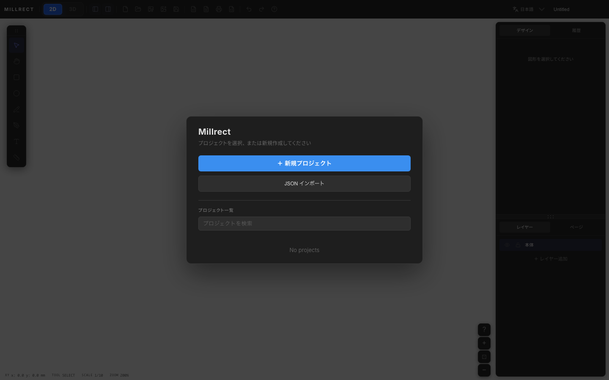
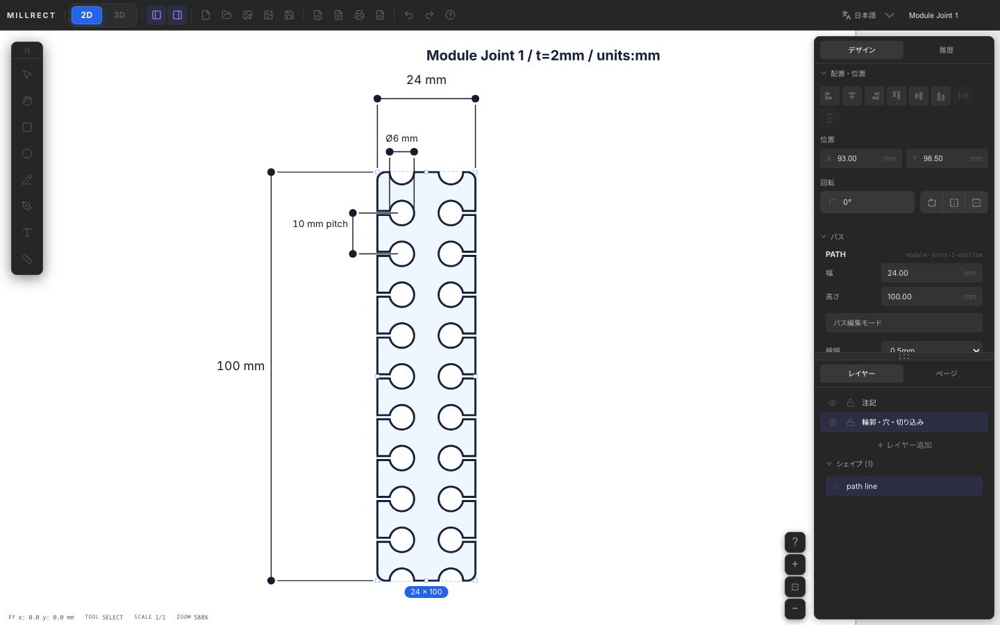

はじめに
Millrect の起動方法と、最初のプロジェクトを作成して図形を描くまでの流れを説明します。
STL 出力まで
思想や MCP の説明は後回しで OK です。まず次の 4 ステップだけ試してください。
-
アプリを開く
millrect.com/app（ブラウザ）または macOS デスクトップ版 -
新規プロジェクトを作る
起動ダイアログで ＋ 新規プロジェクト → 用紙・縮尺を確認して 作成 -
3D プレビュー
ツールバーの 3D ボタンで立体を表示 -
STL 出力
3D パネルの STL出力 で 3D プリント用ファイルを保存
同梱サンプル（JSON）: 初めての直方体 · 穴付き取付板 · L字ブラケット · 3面筐体 · レーザー用パネル · Module Joint 1 — 起動画面の JSON インポート から開けます。
アプリの起動
Millrect はブラウザ版（millrect.com/app）と デスクトップ版の 2 通りがあります。手軽に試すならブラウザ、 AI 連携・テキストの 3D 輪郭化が必要なら macOS デスクトップ版をインストールしてください（現状 macOS のみ配布）。 プロジェクトの保存・読み込み（JSON）はブラウザ版でも利用できます。
デスクトップ版は Applications から Millrect を起動します。 未署名配布のため初回起動で OS の警告が出ることがあります — 対処方法を参照してください。
起動すると、前回の作業を再開するか、新しいプロジェクトを作るかを選ぶ画面が表示されます。 メニューバーの「ヘルプ → ヘルプを検索…」（⌘⇧/）でキーワード検索、または「ドキュメント TOP」などからアプリ内モーダルでこのガイドをいつでも開けます。
新規プロジェクト
真っさらなキャンバスから始める場合は「＋ 新規プロジェクト」を選びます。 起動ダイアログでは、プロジェクト一覧の検索、既存プロジェクトの再開、JSON インポート、新規作成ができます。

「＋ 新規プロジェクト」を押すと、作成フォームが開きます。

| 項目 | 説明 |
|---|---|
| プロジェクト名 | 後からツールバー左上の入力欄でも変更できます。 |
| 用紙サイズ | A4 / A3 など。キャンバスの大きさに対応します。 |
| 向き | 横（landscape）または縦（portrait）。 |
| 縮尺 | 例: 1/10 は「用紙上 1 mm = 実寸 10 mm」を意味します。通常は 1/1 または 1/10 を選びます。 |
「作成」を押すとメイン画面が開き、白いグリッド付きのキャンバスが表示されます。
3D を試す
初めて 3D を試す場合は、新規プロジェクトを作成して、上面図に輪郭を描き、Pages タブの ページ追加から 正面図 (front) や 右側面図 (right) を追加します。 既に同じ面のページがある場合、その面は追加メニューで選べません。
同梱サンプルを確認したい場合は、起動ダイアログの JSON インポート から samples/module-joint-1.json などを開きます。
- 上面図 — Module Joint 1 は 24 mm × 100 mm の外形、Ø6 穴、10 mm ピッチを持つ実プロダクト図面です
- 正面図 — 24 mm × 2 mm の板厚断面で、薄板として 3D プレビューできます
- このドキュメントの画像は Module Joint 1 を基準にしています

2D / 3D の切替はツールバー左側にあります。3D を押すと先にプレビュー画面へ切り替わり、メッシュは生成後に表示されます。 手順の詳細は 3D 生成 — 制作例 も参照してください。
空のキャンバスから自分でページを増やして描きたい場合は、上記の「新規プロジェクト」を使います。

最初の図形を描く
-
矩形ツールを選ぶ
左側のツールパレットで矩形アイコンをクリックします。 -
キャンバス上をドラッグ
ドラッグした範囲が矩形になります。スナップが有効な場合、グリッドや端点に吸着します。 -
選択して編集
選択ツール（矢印）に戻し、図形をクリックして移動・サイズ変更ができます。 Design タブでは塗り・線色も変更でき、3D プレビューに反映されます。

作業内容は自動保存されます。ファイルとして残したい場合は、ツールバーの保存ボタン （または メニュー「ファイル → 保存」）でプロジェクトファイルを保存してください。
覚えておくこと
| ポイント | 内容 |
|---|---|
| 2D 図面が本体 | Millrect では編集するのは図面だけです。3D は図面から自動的に作られます。 |
| 3D には複数ページ | 上面図だけでは立体になりません。Pages タブのページ追加で、正面図など別の投影図ページを追加してください。 |
| Undo / Redo | 図形の追加・移動などは元に戻せます（Ctrl+Z / Ctrl+Y）。ズームやパンは Undo されません。 |
| 塗り・線色 | Design タブの「外観」で指定。塗り色は 3D プレビューのメッシュ色にも使われます。 |